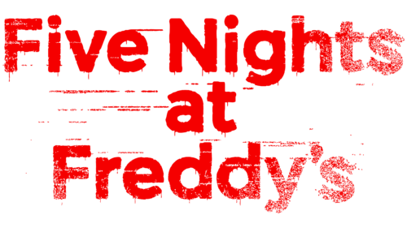

Colégio Estaual Irmã Maria Margarida - EMNP
Professora orientadora: Tamiris Ceolin
Estudante: Luciano Dallo Bonetti

Five Nights at Freddy's (FNAF) é uma franquia de mídia norte americana criada por Scott Cawthon. O primeiro jogo com o mesmo nome foi lançada em 8 de agosto de 2014, depois de seu lançamento a série se tornou um sucesso mundial.
A série original apresenta 9 jogos, sendo o lugar principal a pizzaria de uma família chamada "Freddy Fazbear's Pizza", com o seu mascote principal, o urso animatrônico Freddy Fazbear. Na maioria dos jogos, o jogador aceita o emprego de guarda noturno, onde deve checar as câmeras de segurança, luzes e portas para se defender de assustadores personagens animatrônicos que habitam a pizzaria. A historia da série é gradualmente revelada por meio de gravações de voz, mini jogos e Easter Eggs.
A franquia também inclui jogos spin-off e outras mídias, como um novo filme em produção e uma série antológica, complementando um universo ficcional abrangente. A franquia mantém uma base de fãs ativa, conhecida por sua produção de fan art e fangames, e mercadorias para os jogos estão disponíveis internacionalmente.
Five Nights at Freddy's consiste em jogos de vídeo-horror, onde cada jogo possui diferenças na jogabilidade.
Nos dois primeiros jogos, o jogador assume o papel de um segurança noturno na Pizzaria Freddy Fazbear's Pizza, uma pizzaria semelhante as franquias ShowBiz Pizza Place e Chuck E. Cheese's. O restaurante conta também com bonecos animatrônicos que cantam e dançam para o entretenimento do público. Estes animatrônicos andam livres pelo restaurante durante a noite por motivos técnicos, e o jogador é instruído a manter vigilância sobre estes, pois apresentam comportamento hostil durante a noite, podendo chegar ao ponto de tentar atacá-lo por achar que o segurança é um endoesqueleto de um animatrônico fora da roupa. Nos 3 primeiros jogos da série, o jogador permanece num escritório, e tem a capacidade de usar um sistema de monitoramento baseado em uma tela para observar os robôs através de várias câmeras espalhadas pelo local, embora só possa ver uma câmera por vez.
